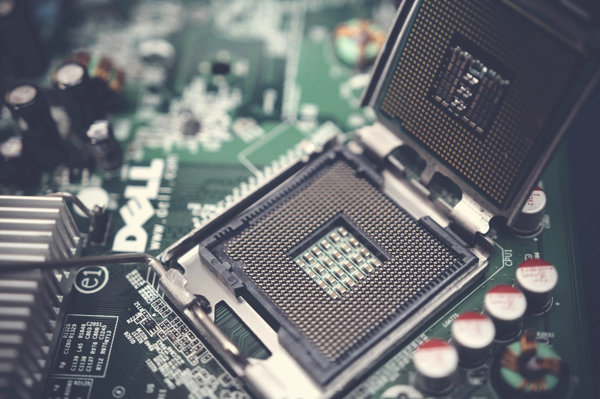

Donde aprenderás sobre la historia del hardware. Cada semana publicaremos las últimas tendencias y novedades del mundo tecnológico.
Historia del Hardware
¿Qué es el hardware?
El hardware es la parte física de un sistema informático. Son todos aquellos componentes tangibles que podemos tocar y ver, como la carcasa, el teclado, el monitor, la placa base, el procesador, la memoria RAM, el disco duro y otros dispositivos periféricos. En pocas palabras, es el "cerebro" y los "músculos" de una computadora.
En la actualidad, hardware también hace referencia a la parte física de equipos de diversa naturaleza. Como electrodomésticos, automóviles, teléfonos inteligentes, tablets, cámaras fotográficas, equipos electrónicos o piezas mecánicas.
Componentes Principales del Hardware
Unidad Central de Procesamiento (CPU)
Placa Base
Memoria RAM
Disco Duro (HDD/SSD)
Tarjeta Gráfica
Características Importantes
Rendimiento
Capacidad de almacenamiento
Compatibilidad
Facilidad de actualización
Los inicios del hardware
La historia del hardware es un fascinante viaje que se remonta a tiempos antiguos. Los primeros
dispositivos para realizar cálculos fueron herramientas mecánicas como el ábaco. Con el paso del tiempo, y
gracias a mentes brillantes como Charles Babbage, surgieron las primeras máquinas calculadoras
programables...
Hitos en la historia del hardware
Ábaco - Primer dispositivo de cálculo.
Calculadora de Pascal - Introducción de la aritmética mecánica.
Máquina analítica de Babbage - Precursor de las computadoras modernas.
Características del hardware temprano
Componentes mecánicos
Limitaciones en velocidad de procesamiento
Uso específico para cálculos matemáticos
Hitos importantes en la evolución del hardware
Transistores: Reemplazaron a los tubos de vacío, haciendo los equipos más pequeños y eficientes.
Circuitos integrados: Permitieron integrar miles de transistores en un solo chip, dando lugar a los microprocesadores.
Microprocesadores: El corazón de las computadoras modernas, concentrando todas las funciones de procesamiento en un solo chip.
Computadoras personales: La democratización de la informática, con equipos más pequeños y accesibles para el público en general.
Hardware hoy en día
Hoy en día, el hardware ha evolucionado a pasos agigantados. Los dispositivos son cada vez más pequeños,
potentes y especializados. Desde los smartphones hasta las supercomputadoras, el hardware está presente
en todos los aspectos de nuestra vida.
Computadoras de escritorio:
Para uso doméstico y profesional.
Portátiles:
Computadoras portátiles de diferentes tamaños y capacidades.
Tabletas:
Dispositivos híbridos entre computadora y teléfono inteligente.
Smartphones:
Teléfonos inteligentes con acceso a internet y aplicaciones.
Consolas de videojuegos:
Dispositivos diseñados para jugar videojuegos.
Servidores:
Computadoras potentes que almacenan y procesan grandes cantidades de datos.
Las Pioneras de la Tecnología
Las mujeres pioneras en la tecnología han dejado una huella indeleble en la historia, desafiando barreras y abriendo caminos en un campo dominado tradicionalmente por hombres. Ada Lovelace, por ejemplo, es reconocida como la primera programadora de la historia, habiendo trabajado con Charles Babbage en la creación del primer algoritmo destinado a una máquina. Su visión innovadora de las máquinas como herramientas para más que solo cálculos matemáticos fue revolucionaria para su tiempo.
Otra figura clave es Grace Hopper, una científica de la computación y naval oficial estadounidense que desarrolló el primer compilador para un lenguaje de programación. Hopper fue una defensora incansable de la accesibilidad en la programación, haciendo que las computadoras fueran más fáciles de usar a través de lenguajes de alto nivel como COBOL, lo que marcó un hito en la historia del software.
Hedy Lamarr, una famosa actriz de cine, también contribuyó significativamente a la tecnología al coinventar una técnica de salto de frecuencias que sentó las bases de tecnologías modernas como el Wi-Fi, el GPS y el Bluetooth. Su ingenio y capacidad para innovar en un campo ajeno a su carrera artística la convierten en un ejemplo de la versatilidad y talento de las mujeres en STEM.
Finalmente, figuras contemporáneas como Radia Perlman, conocida como la "madre de internet", han seguido los pasos de estas pioneras. Perlman desarrolló el protocolo Spanning Tree, esencial para el funcionamiento de las redes modernas, y su trabajo sigue siendo fundamental en la infraestructura de internet, mostrando que la influencia de las mujeres en la tecnología sigue siendo profunda y relevante.
Control de Versiones, Desarrollo en Software y Hardware
Git: Control de Versiones
Git es un sistema de control de versiones distribuido que permite a los desarrolladores gestionar cambios en su código de manera eficiente.
GitHub: Colaboración en Proyectos
GitHub facilita la colaboración entre desarrolladores mediante herramientas como pull requests, forks y revisiones de código.

Desarrollo de Hardware
El desarrollo de hardware involucra la creación y diseño de componentes físicos como procesadores, placas base y más.
Desarrollo de Software
El desarrollo de software abarca desde la programación hasta el despliegue de aplicaciones que resuelven problemas o automatizan tareas.
La tecnología ha avanzado rápidamente en los últimos años, afectando tanto el desarrollo de software como el de hardware. En esta entrada exploramos algunas de las herramientas y conceptos más importantes en ambos campos, como Git y GitHub para control de versiones y colaboración, y el desarrollo de hardware que impulsa las innovaciones tecnológicas.
Colaboradores
A continuación se presentan los colaboradores del proyecto, junto con sus enlaces a GitHub: